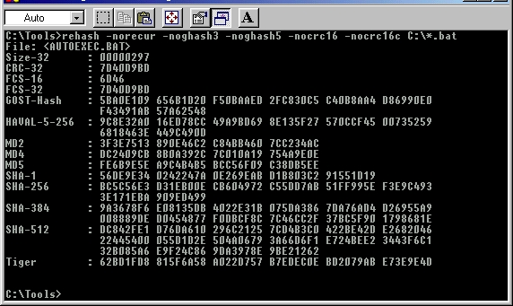

Title: ReHash Author: Dominik Reichl Email: dominik.reichl@t-online.de Environment: VC++ 5.0-7.0, NT 4.0, Win95/98/ME, Win2k, WinXP Keywords: Hash, Security, Cryptography, Win32 Level: Intermediate" Description: A console-based hash calculator. Supported algorithms: CRC-16, CRC-16-CCITT, CRC-32, FCS-16, FCS-32, GHash-32-3, GHash-32-5, GOST-Hash, HAVAL-5-256, MD2, MD4, MD5, SHA-1, SHA-256, SHA-384, SHA-512, Tiger. Section Cpp SubSection Cryptography

| CRC-16 | 16 bits | ||
| CRC-16-CCITT | 16 bits | ||
| CRC-32 | ANSI X3.66, FIPS PUB 71 | 32 bits | |
| FCS-16 | 16 bits | ||
| FCS-32 | 32 bits | ||
| GHash (GHash-32-3, GHash-32-5) | - | - | 32 bits |
| GOST-Hash | R 34.11-94 | 256 bits | |
| HAVAL (5 passes, 256 bits) | Zheng, Pieprzyk, Seberry |
256 bits | |
| MD2 | RFC 1319 | Rivest | 128 bits |
| MD4 | RFC 1320 | Rivest | 128 bits |
| MD5 | RFC 1321 | Rivest | 128 bits |
| SHA-1 | FIPS PUB 180-1 | NIST/NSA | 160 bits |
| SHA-2 (SHA256/SHA384/SHA512) | NIST/NSA | 256/384/512 bits | |
| SizeHash-32 | - | - | 32 bits |
| Tiger | Anderson, Biham | 192 bits |
rehash.exe [options] filespec [> outputfile]
rehash.exe -all -none *.*it will output nothing, because you first activate all algorithms and then deactivate them all.
rehash.exe C:\Windows\*.ini
rehash.exe -norecur C:\Windows
rehash.exe -none -md5 -sha1 C:\*.bat
rehash.exe -norecur -none -gost C:\Temp\*
rehash.exe -none -md5 C:\homepage\*.zip > C:\homepage\downloads\hashes.txt
| -help / -h / -?/ -version / -v |
Print some information about ReHash. |
| -fullpath / -f | Output the full paths of hashed files. |
| -nopath | Just output the filenames of hashed files, not the full paths to the files. |
| -rcrsv / -recur / -r | Recursive scanning. Scan all files in the specified path including files in subdirectories. |
| -norcrsv / -norecur | Disable recursive scanning. Scan only the files in the specified path not including subdirectories. |
| -all / -a | Enable all algorithms. |
| -none / -n | Disable all algorithms. |
| -crc16 / -nocrc16 | Enable/disable the CRC-16 algorithm. |
| -crc16c / -nocrc16c | Enable/disable the CRC-16-CCITT algorithm. |
| -crc32 / -nocrc32 | Enable/disable the CRC-32 algorithm. |
| -fcs16 / -nofcs16 | Enable/disable the FCS-16 algorithm. |
| -fcs32 / -nofcs32 | Enable/disable the FCS-32 algorithm. |
| -ghash3 / -noghash3 | Enable/disable the GHash-3 algorithm. |
| -ghash5 / -noghash5 | Enable/disable the GHash-5 algorithm. |
| -gost / -nogost | Enable/disable the GOST-Hash algorithm. |
| -haval / -nohaval | Enable/disable the HAVAL-5-256 algorithm. |
| -md2 / -nomd2 | Enable/disable the MD2 algorithm. |
| -md4 / -nomd4 | Enable/disable the MD4 algorithm. |
| -md5 / -nomd5 | Enable/disable the MD5 algorithm. |
| -sha1 / -nosha1 | Enable/disable the SHA-1 algorithm. |
| -sha256 / -nosha256 | Enable/disable the SHA-256 algorithm. |
| -sha384 / -nosha384 | Enable/disable the SHA-384 algorithm. |
| -sha512 / -nosha512 | Enable/disable the SHA-512 algorithm. |
| -size32 / -nosize32 | Enable/disable the Size-32 algorithm (simply the byte-count of the message). |
| -tiger / -notiger | Enable/disable the TIGER algorithm. |